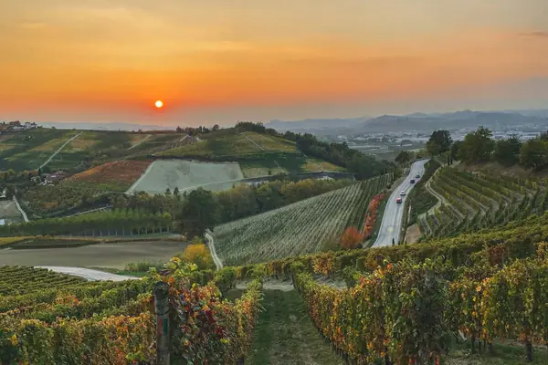

Home › Wine regions › Piedmont
Piedmont wine region

Photo: Beatrice Zinetti on Unsplash
Barolo, Barbaresco and Asti.
Vines grow in all 20 regions. Wines are classed DOCG, DOC and IGT.
Notable producers in Piedmont
- Gaja
- Giacomo Conterno
- Bruno Giacosa
- Pio Cesare
- Produttori del Barbaresco
Official appellations
| Appellation | Status | Style | Grapes |
|---|---|---|---|
| Barolo (1980) The 'king of wines' from the Langhe hills south of Alba. Must age at least 38 months, 18 of them in wood, before release; Riserva at least 62 months. | DOCG | Red | Nebbiolo |
| Barbaresco (1980) Barolo's neighbour across Alba, often a little more fragrant and approachable. At least 26 months of ageing, 9 in wood; Riserva at least 50 months. | DOCG | Red | Nebbiolo |
| Alta Langa (2011) Traditional-method sparkling from the hills of Langa, Roero and Monferrato, always vintage-dated and aged at least 30 months on the lees. | DOCG | Sparkling | Pinot Noir, Chardonnay |
| Asti (1993) One DOCG for two sweet, aromatic Moscato styles: fully sparkling Asti Spumante and gently fizzy, low-alcohol Moscato d'Asti. | DOCG | Sparkling | Moscato Bianco |
| Canelli (2023) Moscato from the hills around Canelli, separated from the Asti DOCG in 2023 for its finest, most fragrant gently sparkling sweet wines. | DOCG | Sparkling | Moscato Bianco |
| Barbera d'Asti (2008) Rolling hills of the Asti and Alessandria provinces, on calcareous marls and sandier sediments, give a vivid, high-acid red of at least 90% Barbera. Superiore needs 14 months' ageing including 6 in wood, and the Superiore-only sub-zones Tinella and Colli Astiani require 24 months. Good to know: Nizza, once a sub-zone, has been a DOCG in its own right since 2014. | DOCG | Red | Barbera |
| Nizza (2014) 100% Barbera from 18 communes around Nizza Monferrato, the most powerful expression of the grape, with long minimum ageing. | DOCG | Red | Barbera |
| Barbera del Monferrato Superiore (2008) Covers a large swathe of the Monferrato hills across the provinces of Asti and Alessandria, on calcareous marls and sandy clays. At least 85% Barbera, with Freisa, Grignolino or Dolcetto allowed to fill out the blend, aged a minimum of 14 months including 6 in wood. Good to know: the plain Barbera del Monferrato is a separate DOC, often lighter and sometimes slightly fizzy, while the DOCG is the barrel-aged, structured version. | DOCG | Red | Barbera, Dolcetto, Freisa, Grignolino |
| Brachetto d'Acqui (1996) From the Monferrato hills around Acqui Terme in the provinces of Asti and Alessandria, this is a light, sweet, low-alcohol red made from at least 97% Brachetto. It comes mostly as spumante, with still and passito versions too, all smelling of rose petals and wild strawberries. Good to know: serve it chilled with fruit desserts or chocolate; it is one of the few reds that works with both. | DOCG | Sparkling, Sweet | Brachetto |
| Dogliani (2005) The hills around Dogliani, south of Barolo in the Langhe, give Dolcetto its most serious expression: dark-fruited, with a typical almond-bitter finish. The wine is 100% Dolcetto, and Superiore (the old Dolcetto di Dogliani Superiore) must age at least a year. Good to know: Dogliani was Dolcetto's first DOCG, and many producers make it in a richer style meant for a few years in bottle. | DOCG | Red | Dolcetto |
| Diano d'Alba (2010) A single-commune DOCG for Dolcetto on the hills of Diano d'Alba, between the Barolo villages and Alba, with vineyards reaching around 500 m on limestone-rich marls. Wines are 100% Dolcetto; the Superiore needs extra alcohol and roughly a year of ageing before release. Good to know: the rules recognise 77 named vineyards called sorì (Piedmontese for a sunny, well-exposed slope), which often appear on labels; the full name is Dolcetto di Diano d'Alba. | DOCG | Red | Dolcetto |
| Ovada (2008) Dolcetto from the hills around Ovada in the province of Alessandria, close to the Ligurian border, where cool sea air and marly, clay-rich soils give firmer, darker wines than most Dolcetto. Made from 100% Dolcetto, it needs at least 12 months' ageing, 24 for the Riserva, and single-vineyard 'Vigna' versions are allowed. Good to know: also labelled Dolcetto di Ovada Superiore; the lighter everyday Dolcetto di Ovada remains a separate DOC. | DOCG | Red | Dolcetto |
| Erbaluce di Caluso (2010) Grown around Caluso in the Canavese, north of Turin, inside the glacial moraine amphitheatre of Ivrea, this DOCG is 100% Erbaluce. It comes as a crisp, high-acid dry white, as sparkling (Charmat or traditional method) and as Caluso Passito from dried grapes with long ageing. Good to know: the grape's acidity lets all three styles age well, the passito for decades. | DOCG | White, Sparkling, Sweet | Erbaluce |
| Gattinara (1990) On the west bank of the Sesia in Alto Piemonte, Nebbiolo (locally Spanna) grows on acidic, ancient volcanic porphyry, making perfumed, firm and long-lived reds. At least 90% Nebbiolo, topped up with small amounts of Vespolina or Uva Rara; the wine ages 35 months (24 in wood) and Riserva 47 months. Good to know: it was Alto Piemonte's first DOCG, in 1990. | DOCG | Red | Nebbiolo, Vespolina |
| Ghemme (1997) Across the Sesia from Gattinara, the vineyards of Ghemme and Romagnano Sesia sit on stony glacial moraine. Nebbiolo (Spanna) leads, with up to 15% Vespolina and Uva Rara; the wine ages at least 34 months, 18 of them in wood, and Riserva 46 months with 24 in wood. Good to know: single-vineyard 'Vigna' wines need vines at least seven years old and lower yields. | DOCG | Red | Nebbiolo, Vespolina |
| Gavi (1998) Also labelled Cortese di Gavi, this 100% Cortese white comes from hills in south-east Piedmont near the Ligurian border, on red clays and white marls cooled by sea breezes. Styles are still (Riserva aged at least a year) and sparkling, with a Riserva Spumante Metodo Classico spending 18 months on the lees. Good to know: only wine grown in the town of Gavi itself can be called 'Gavi del comune di Gavi'. | DOCG | White, Sparkling | Cortese |
| Roero (2004) North of the Tanaro river, opposite the Langhe, the Roero's loose sandy soils and steep 'rocche' gullies give aromatic Roero Arneis (at least 95% Arneis, also Riserva and sparkling) and fragrant, earlier-drinking Nebbiolo. Roero Rosso is 95% or more Nebbiolo, aged at least 20 months, Riserva 32 months. Good to know: Arneis was nearly extinct in the 1970s before Roero growers revived it. | DOCG | White, Red, Sparkling | Arneis, Nebbiolo |
| Ruchè di Castagnole Monferrato (2010) Seven villages around Castagnole Monferrato in the province of Asti make this rare aromatic red from at least 90% Ruchè, with Barbera or Brachetto allowed for the rest. It smells of roses, violets and spice with soft tannins, and is usually drunk fairly young. Good to know: a local parish priest, Don Giacomo Cauda, rescued the grape from near extinction in the 1960s and 70s. | DOCG | Red | Ruchè, Barbera, Brachetto |
| Terre Alfieri (2020) A small zone of 11 communes between Roero and the Asti hills, on steep slopes of loose Pliocene marine sands ('Asti sands'). It covers Arneis whites and Nebbiolo reds (each at least 85%); Superiore Arneis ages 6 months, Superiore Nebbiolo 12 months (6 in wood) and Nebbiolo Riserva 24 months (12 in wood). Good to know: named after the poet Vittorio Alfieri, born in Asti in 1749, it was promoted from DOC (2009) to DOCG in October 2020. | DOCG | White, Red | Arneis, Nebbiolo |
| Piemonte (1994) Region-wide DOC covering varietal wines and sparkling from across the Piedmont hills. | DOC | White, Red, Sparkling | Barbera, Moscato Bianco, Cortese |
| Alba Red blends of Nebbiolo and Barbera from the Langhe and Roero around Alba. | DOC | Red | Nebbiolo, Barbera |
| Albugnano Small Nebbiolo zone in the hills north of Asti. | DOC | Red | Nebbiolo |
| Barbera d'Alba (1970) Rich, juicy Barbera grown alongside Nebbiolo in the Langhe and Roero. | DOC | Red | Barbera |
| Barbera del Monferrato (1970) Everyday Barbera from Monferrato, sometimes lightly fizzy. | DOC | Red | Barbera |
| Boca Tiny Alto Piemonte zone of Nebbiolo-based reds from volcanic porphyry soils. | DOC | Red | Nebbiolo, Vespolina |
| Bramaterra Alto Piemonte Nebbiolo blend from acidic volcanic soils near Biella and Vercelli. | DOC | Red | Nebbiolo, Croatina, Vespolina |
| Calosso Rare red from the local Gamba di Pernice grape around Calosso. | DOC | Red | Gamba di Pernice |
| Canavese Whites and reds from the Canavese hills north of Turin. | DOC | White, Red | Erbaluce, Nebbiolo, Barbera |
| Carema (1967) Alpine Nebbiolo from stone-terraced pergolas at the Aosta Valley border: delicate and mineral. | DOC | Red | Nebbiolo |
| Cisterna d'Asti Red from the Croatina grape in the hills between Asti and Roero. | DOC | Red | Croatina |
| Colli Tortonesi The home of Timorasso, a revived white grape making rich, mineral, long-lived wines. | DOC | White, Red | Timorasso, Barbera |
| Collina Torinese Light reds from the hills around Turin. | DOC | Red | Barbera, Freisa |
| Colline Novaresi Alto Piemonte catch-all DOC for Nebbiolo, Vespolina and Erbaluce. | DOC | White, Red | Nebbiolo, Vespolina, Erbaluce |
| Colline Saluzzesi Small DOC near Saluzzo known for the pale, peppery Pelaverga grape. | DOC | Red | Pelaverga |
| Cortese dell'Alto Monferrato Fresh Cortese whites from the Alto Monferrato hills. | DOC | White | Cortese |
| Coste della Sesia Alto Piemonte DOC for Nebbiolo-based reds and Erbaluce whites west of the Sesia river. | DOC | White, Red | Nebbiolo, Erbaluce |
| Dolcetto d'Acqui Soft, fruity Dolcetto from around Acqui Terme. | DOC | Red | Dolcetto |
| Dolcetto d'Alba (1974) The classic everyday Langhe red: purple fruit, low acidity and a bitter-almond finish. | DOC | Red | Dolcetto |
| Dolcetto d'Asti Light, fruity Dolcetto from the Asti hills. | DOC | Red | Dolcetto |
| Dolcetto di Ovada Dolcetto from Ovada for young drinking; the Superiore is DOCG. | DOC | Red | Dolcetto |
| Fara Tiny Alto Piemonte DOC for Nebbiolo-Vespolina blends. | DOC | Red | Nebbiolo, Vespolina |
| Freisa d'Asti Tart, raspberry-scented Freisa, still or fizzy. | DOC | Red | Freisa |
| Freisa di Chieri Freisa from the hills east of Turin, dry or off-dry. | DOC | Red | Freisa |
| Gabiano Small Barbera-based DOC in the Casale Monferrato area. | DOC | Red | Barbera |
| Grignolino d'Asti Pale, tannic, peppery red from the hard-to-grow Grignolino. | DOC | Red | Grignolino |
| Grignolino del Monferrato Casalese Grignolino from the Casale Monferrato hills. | DOC | Red | Grignolino |
| Langhe Flexible DOC for the Langhe hills: Langhe Nebbiolo, whites and declassified Barolo or Barbaresco fruit. | DOC | White, Red | Nebbiolo, Chardonnay, Arneis, Dolcetto, Freisa |
| Lessona Tiny Alto Piemonte DOC of elegant Nebbiolo from marine sands. | DOC | Red | Nebbiolo |
| Loazzolo Rare late-harvest sweet Moscato from a single village. | DOC | Sweet | Moscato Bianco |
| Malvasia di Casorzo d'Asti Sweet, aromatic pink or red Malvasia, often lightly sparkling. | DOC | Sweet | Malvasia di Casorzo |
| Malvasia di Castelnuovo Don Bosco Sweet, fizzy red Malvasia from near Castelnuovo Don Bosco. | DOC | Sweet | Malvasia di Schierano |
| Monferrato Catch-all DOC for the Monferrato hills, including blends. | DOC | White, Red | Barbera, Dolcetto, Cortese |
| Nebbiolo d'Alba (1970) Nebbiolo from the Langhe and Roero outside the Barolo and Barbaresco zones: perfumed and earlier-drinking. | DOC | Red | Nebbiolo |
| Pinerolese Light reds from the foothills near Pinerolo, west of Turin. | DOC | Red | Barbera, Dolcetto |
| Rubino di Cantavenna Barbera-based red from a few villages near the Po. | DOC | Red | Barbera, Grignolino |
| Sizzano Small Alto Piemonte Nebbiolo DOC near Ghemme. | DOC | Red | Nebbiolo |
| Strevi Sweet passito Moscato from Strevi in the Acqui hills. | DOC | Sweet | Moscato Bianco |
| Valli Ossolane Alpine DOC in the far north of Piedmont, near the Swiss border. | DOC | White, Red | Nebbiolo |
| Valsusa Mountain reds from the Susa Valley west of Turin. | DOC | Red | Avanà, Barbera |
| Verduno Pelaverga Pale, peppery red from Pelaverga Piccolo in the Barolo village of Verduno. | DOC | Red | Pelaverga |
Piedmont wines to try
Gaja Barbaresco
Piedmont · Barbaresco · Nebbiolo
Fragrant Nebbiolo: rose, red cherry, tar and firm tannins.
Food: Truffle risotto, braised beef
Giacomo Conterno Barolo Cascina Francia
Traditional Barolo: dried roses, cherries, liquorice and grippy tannins.
Food: Brasato al Barolo, tajarin
La Scolca Gavi dei Gavi Etichetta Nera
Classic Gavi: citrus, almond and crisp minerality.
Food: Fish, vitello tonnato
Pio Cesare Barbera d'Alba
Piedmont · Barbera d'Alba · Barbera
Bright, juicy Barbera: cherry and fresh acidity.
Food: Pizza, salumi
G.D. Vajra Dolcetto d'Alba
Piedmont · Dolcetto d'Alba · Dolcetto
Soft, purple-fruited Dolcetto.
Food: Antipasti, pasta
G.D. Vajra Barolo Albe
Fragrant, high-altitude Barolo: roses, cherry and fine tannin.
Food: Truffle pasta, braised beef
Bruno Giacosa Barolo Le Rocche del Falletto
Legendary Serralunga Barolo: powerful, perfumed and long-lived.
Food: Truffle, game
Bruno Giacosa Barbaresco Asili Riserva
Piedmont · Barbaresco · Nebbiolo
Iconic Barbaresco cru: refined, floral and complex.
Food: Truffle risotto, veal
More wine regions in Italy
The Wine Reference newsletter
New wines, stories and career guides, one email a week at most.
Over 18s only. Unsubscribe any time with one click. Your email is stored securely by Kit and never shared.
Support The Wine Reference
This guide is free, with no paywall. If it helped you choose a bottle, you can buy me a glass and keep it growing.
🍷 Buy me a glass